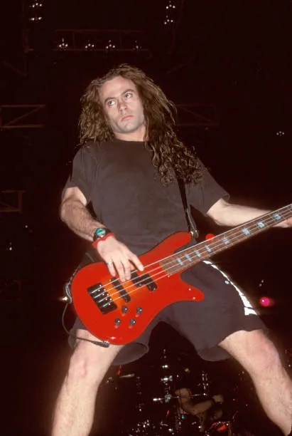
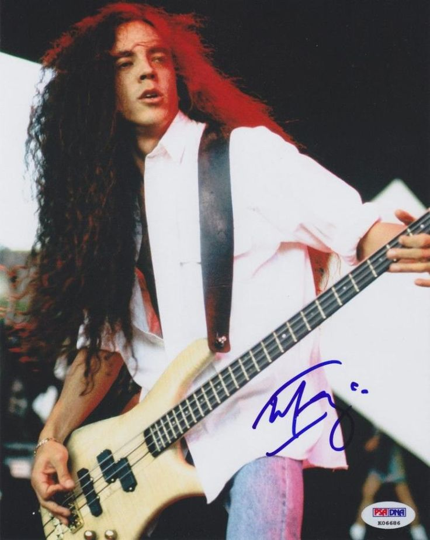
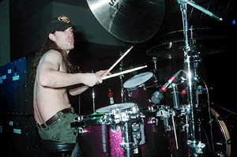
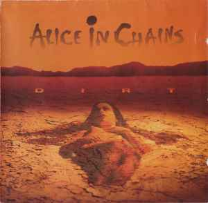
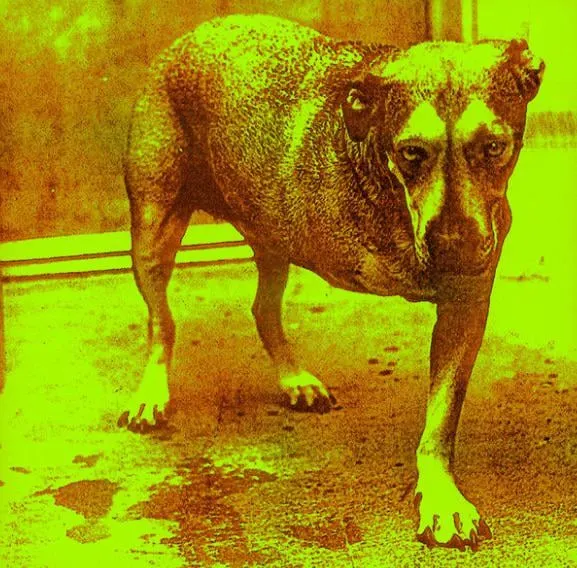
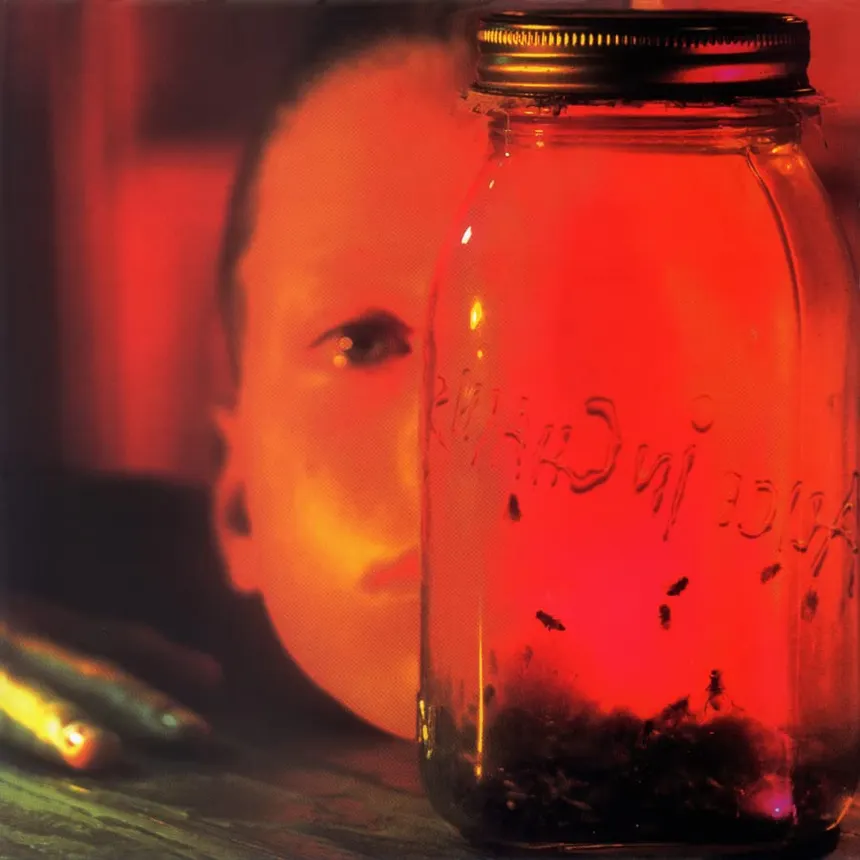

Layne | Jerry | Mike Starr | Mike Inez | Sean | Facelift | Dirt | Alice (1995) | Jar of Flies
Alice in Chains é uma banda icônica de rock/metal alternativo formada em 1987 em Seattle, Washington, EUA. Durante a era Layne Staley, a banda se destacou por sua sonoridade sombria e riffs pesados, com letras profundas e introspectivas que frequentemente abordavam temas como vício, depressão e perda.
Álbuns marcantes dessa época incluem Facelift (1990), Dirt (1992) e Alice in Chains (1995), que consolidaram a banda no movimento grunge, junto a Nirvana, Pearl Jam e Soundgarden, mas mantendo uma identidade própria e única.
O vocal inconfundível de Layne Staley e as harmonias vocais com Jerry Cantrell se tornaram uma marca registrada, fazendo com que a banda fosse reconhecida mundialmente e deixasse um legado duradouro no rock.
Layne Staley foi o vocalista icônico do Alice in Chains, conhecido por sua voz única e letras intensas que exploravam temas de dor, vício e emoções profundas. Seu talento marcou o grunge e deixou um legado inesquecível no rock dos anos 90. Saiba mais
Jerry Cantrell foi o guitarrista principal do Alice in Chains, conhecido por suas riffs pesadas e melodia envolvente. Sua contribuição musical foi fundamental para o som distintivo da banda durante a era Layne Staley. Saiba mais

Mike Starr foi o primeiro baixista do Alice in Chains, participando da formação inicial da banda e contribuindo diretamente para o sucesso dos primeiros lançamentos, incluindo o álbum Dirt. Seu estilo ajudou a construir a base do som pesado e característico do grupo durante o auge do grunge. Em 1993, Starr deixou a banda devido a problemas pessoais e conflitos internos, marcando o fim de sua participação na formação clássica daquele período. Saiba mais

Mike Inez foi o baixista do Alice in Chains durante a era Layne Staley, conhecido por suas linhas de baixo sólidas e groove marcante. Sua presença contribuiu para a profundidade sonora da banda, complementando os riffs de guitarra e a voz de Layne Staley. Saiba mais

Sean Kinney foi o baterista do Alice in Chains durante a era Layne Staley, conhecido por seu estilo de bateria sólido e energético. Sua contribuição foi essencial para o som distintivo da banda, ajudando a criar a atmosfera sombria e intensa que caracterizava o grunge dos anos 90. Saiba mais
Facelift é o álbum de estreia do Alice in Chains, lançado em 1990. Este álbum marcou a entrada da banda na cena musical, apresentando um som pesado e sombrio que se tornaria a marca registrada do grupo. Com faixas como "Man in the Box" e "We Die Young", Facelift estabeleceu o grunge como um movimento musical significativo, ganhando reconhecimento e sucesso comercial. Saiba mais

Dirt é o segundo álbum do Alice in Chains, lançado em 1992. Este álbum consolidou o som pesado e sombrio da banda, apresentando faixas como "Would?" e "Again", que reforçaram a identidade do grunge e contribuíram para o sucesso comercial da banda. Saiba mais

O álbum Alice in Chains, lançado em 1995, é o terceiro álbum de estúdio da banda, marcando um período de transição e desafios para o grupo. Este álbum apresenta uma sonoridade mais sombria e introspectiva, refletindo as lutas pessoais dos membros da banda, especialmente do vocalista Layne Staley. Com faixas como "Grind" e "Heaven Beside You", o álbum recebeu críticas mistas, mas ainda é considerado uma parte importante da discografia do Alice in Chains, representando um momento crucial na história da banda durante a era Layne Staley. Saiba mais

O álbum Jar of Flies, lançado em 1994, é o quarto álbum de estúdio da banda, conhecido por sua sonoridade mais introspectiva e melancólica. Este álbum apresenta faixas como "Heaven Beside You" e "I Can't Make You Love Me", que refletem as lutas pessoais dos membros da banda, especialmente do vocalista Layne Staley. Saiba mais